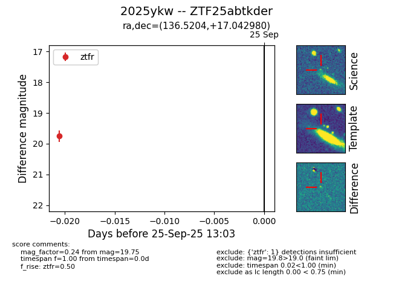

FINK: ZTF25abtkder
Lasair: ZTF25abtkder
ALeRCE: ZTF25abtkder
TNS: 2025ykw
YSE: 2025ykw
ZTF25abtkder (ztf,fink)
2025ykw (tns,yse)
equatorial (ra, dec) = (136.5204,+17.04298)
galactic (l, b) = (211.5495,+37.24898)

last ztfr=19.75
1 ztfr detections